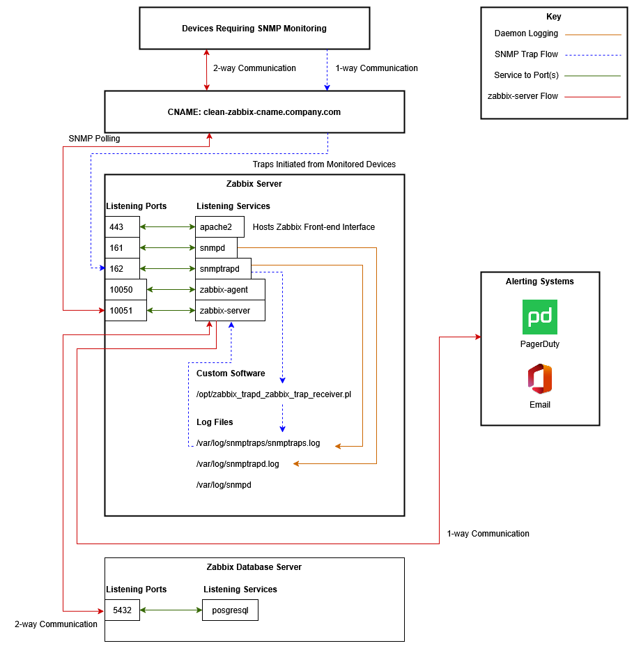

Overview
Designed and implemented a Zabbix-based monitoring solution for network devices that lacked support for traditional monitoring methods. The solution leveraged SNMP polling and trap-based monitoring to provide real-time visibility and alerting across the environment.
Key Highlights
- Designed SNMP-based monitoring for devices without native agent support
- Deployed across several hundred network devices requiring SNMP-based monitoring
- Implemented both polling and trap-based monitoring strategies
- Integrated Zabbix with PagerDuty and email alerting systems
- Built custom Puppet wrapper modules to extend upstream Zabbix modules
- Automated deployment and configuration of monitoring infrastructure
Architecture Diagram(s)

Click diagram to enlarge.
Architecture Explanation
Devices Requiring SNMP Monitoring
SNMP Traps
- These devices send SNMP traps on hardware failures to the CNAME clean-zabbix-cname.company.com. This CNAME points to the Zabbix Server.
- Note: SNMP traps are a 1-way communication.
SNMP Polling
- These devices receive SNMP polling communication/requests from the Zabbix Server.
- These devices reply to this SNMP polling with details needed to confirm hardware stats, etc.
CNAME
The CNAME has two purposes:
- Facilitating a clean and easy-to-remember name for the Zabbix Server across the network (for web access, ticketing, etc).
- Allowing for the migration/transition to a new Zabbix server in the future. When this time comes, the Devices Requiring SNMP Monitoring should not need to change the host their configuration points at.
Zabbix Server
apache2 (Service)
- apache2 runs as a service on the Zabbix Server. It front-ends the zabbix-server service allowing web access.
- apache2 listens on port 443.
snmpd (Service)
- snmpd listens on port 161 and responds to any SNMP polling sent directly to the Zabbix Server.
- While snmpd is available to respond, this is not what the server is specifically built for (response to polling requests).
snmptrapd (Service)
- snmptrapd listens on port 162 and responds to any incoming SNMP traps that are sent to it from Devices Requiring SNMP Monitoring on the network.
- It should be noted that, while there are many ways to process these traps, Zabbix recommends using the zabbix_trap_receiver.pl. I followed their best practices for this.
- The snmptrapd service logs to the file at /var/log/snmptrapd.log
- zabbix_trap_receiver.pl was set up to log to /var/log/snmptraps/snmptraps.log - From here, incoming SNMP traps can be viewed. Also, any issues with the zabbix_trap_receiver.pl can be seen during execution.
zabbix-agent (Service)
- The zabbix-agent service is running and listens on port 10050
- This service collects and provides detailed system metrics to the Zabbix Server.
zabbix-server (Service)
- The zabbix-server service is running and listens on port 10051
- This service performs SNMP polling to Devices Requiring SNMP Monitoring.
- This service alerts on any SNMP traps that are triggered.
- This service integrates with email, PagerDuty, and other systems to notify teams of "downed" devices.
Zabbix Database Server
postgresql (service)
- A PostgreSQL backend supported Zabbix data storage, integrated into the existing infrastructure stack.
Automation and Code
Overview
The client required Zabbix installations that were repeatable. I chose to do this with Puppet in their environment.
I wrote a wrapper around the following Puppet Forge Module: Vop Pupuli zabbix module
I specifically architected it around this configuration: Multi node Zabbix Server setup
The authors detail various methods on this page for installing Zabbix. I chose the 2-server configuration with PostgreSQL as the database backend.
Challenges & Solutions
-
Problem: Devices did not support traditional monitoring agents
Solution: Implemented SNMP-based monitoring using both polling and trap mechanisms -
Problem: SNMP traps are one-way and can be unreliable
Solution: Combined trap-based alerting with polling to ensure visibility and validation -
Problem: Upstream Zabbix modules lacked required customization
Solution: Developed wrapper Puppet modules to extend functionality and standardize deployments
Outcome
Delivered a scalable monitoring solution for previously unsupported network devices, enabling real-time alerting and significantly improving visibility into hardware health. Reduced incident detection time and improved response through integration with PagerDuty and email alerting systems.